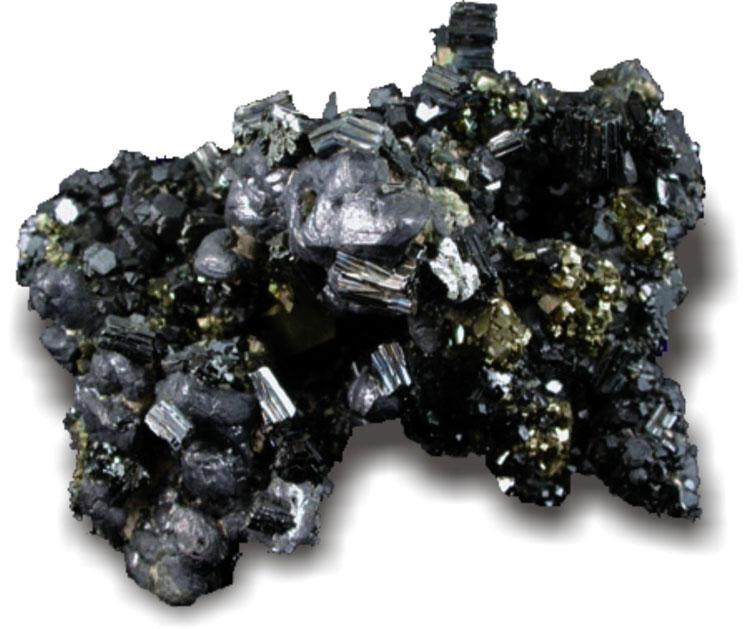
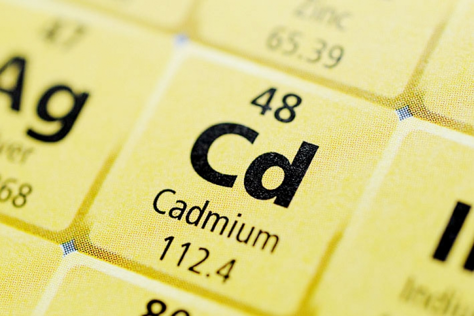

Кадмий
Ка́дмий (химический символ — Cd, от лат. Cadmium) — химический элемент 12-й группы (по устаревшей классификации — побочной подгруппы второй группы, IIB), пятого периода периодической системы химических элементов Д. И. Менделеева, с атомным номером 48.

Открыт немецким профессором Ф. Штромейером в 1817 году. Провизоры Магдебурга при изучении оксида цинка ZnO заподозрили в нём примесь мышьяка. Штромейер выделил из ZnO коричнево-бурый оксид, восстановил его водородом и получил серебристо-белый металл, который получил название кадмий.
Основные источники кадмия – промежуточные продукты цинкового производства: медно-кадмиевые «кеки» (содержание кадмия 2–12 % по массе), пуссьеры (0,7–1,1 %), летучие фракции, выделенные при ректификационной очистке Zn (до 40 %), пыли свинцовых (0,5–5 %) и медеплавильных (0,2–0,5 %) заводов. Сырьё, содержащее кадмий, растворяют в H2SO4 в присутствии окислителей, затем цинковой пылью осаждают металлический кадмий в виде т. н. кадмиевой губки, которую растворяют в H2SO4. Полученный раствор очищают различными способами, например методом ионного обмена. Из кислых растворов металлический кадмий выделяют электролизом или вытесняют металлическим цинком. Металлический кадмий высокой чистоты получают электролитическим рафинированием, ректификацией металла, зонной плавкой и др. Сочетанием этих способов получают кадмий с содержанием основных примесей (Zn, Сu и др.) менее 10–5 % по массе.

Кадмий используют для нанесения антикоррозионных покрытий на металлы, изготовления электродов для аккумуляторов, получения пигментов, изготовления специальных припоев, полупроводниковых материалов, стабилизаторов пластмасс, регулирующих и аварийных стержней ядерных реакторов, как компонент антифрикционных, легкоплавких и ювелирных сплавов. Объём мирового производства кадмия около 24 тыс. т/год (2021).